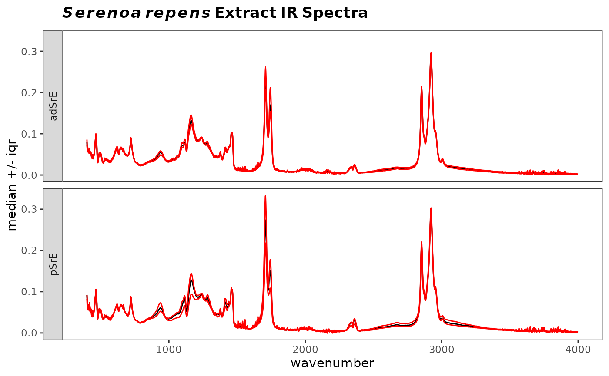
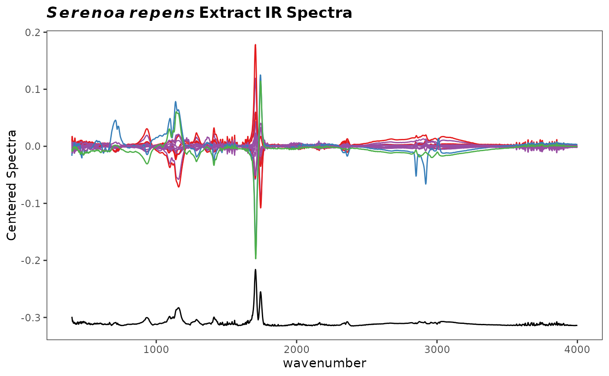

R/surveySpectra.R, R/surveySpectra2.R
surveySpectra.RdCompute and plot various measures of central tendency and
spread for a Spectra object. Several different measures/spreads
are available. These are useful as an overview of where a data set varies
the most.
surveySpectra( spectra, method = c("sd", "sem", "sem95", "mad", "iqr"), by.gr = TRUE, ... ) surveySpectra2( spectra, method = c("sd", "sem", "sem95", "mad", "iqr"), lab.pos = 0.9 * max(spectra$freq), ... )
| spectra | An object of S3 class |
|---|---|
| method | Character. One of |
| by.gr | Logical, indicating if the analysis is to be done by group or
not. Applies to |
| ... | Parameters to be passed to the plotting routines. Applies to base graphics only. |
| lab.pos | Numeric, giving the frequency where the label should be drawn.
Applies to |
The returned value depends on the graphics option selected (see GraphicsOptions).
None. Side effect is a plot.
The plot is displayed, and a ggplot2 plot object is returned if the
value is assigned. The plot can be modified in the usual ggplot2 manner.
For surveySpectra the method choice works as follows: sd plots
the mean spectrum +/- the standard deviation, sem plots the mean
spectrum +/- the standard error of the mean, sem95 plots the mean
spectrum +/- the standard error at the 95 percent confidence interval,
mad plots the median spectrum +/- the median absolute deviation, and
finally, iqr plots the median spectrum + the upper hinge and - the
lower hinge.
For surveySpectra2, the spectra are mean centered and plotted. Below
that, the relative summary statistic is plotted, offset, but on the same
scale.
surveySpectra: Spectral survey emphasizing mean or median spectrum, optionally by group.
surveySpectra2: Spectral survey emphasizing variation among spectra.
Additional documentation at https://bryanhanson.github.io/ChemoSpec/
Bryan A. Hanson (DePauw University), Tejasvi Gupta.
# This example assumes the graphics output is set to ggplot2 (see ?GraphicsOptions). library("ggplot2") data(SrE.IR) myt <- expression(bolditalic(Serenoa) ~ bolditalic(repens) ~ bold(Extract ~ IR ~ Spectra)) p1 <- surveySpectra(SrE.IR, method = "iqr")#> #> #> #>#> #> #> #>